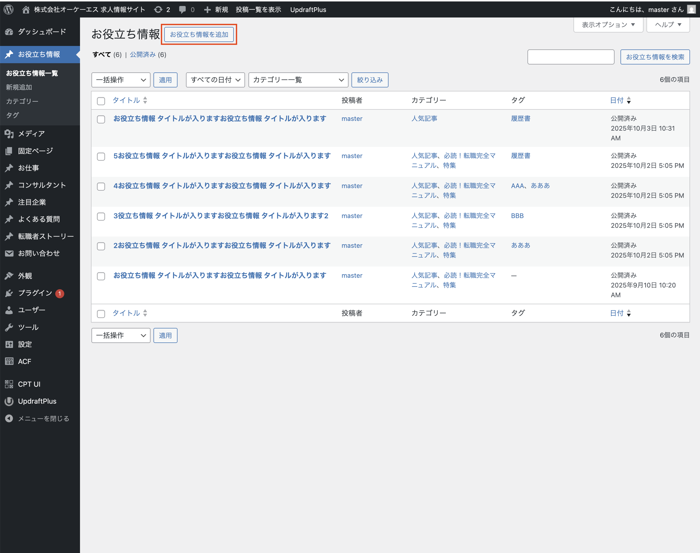
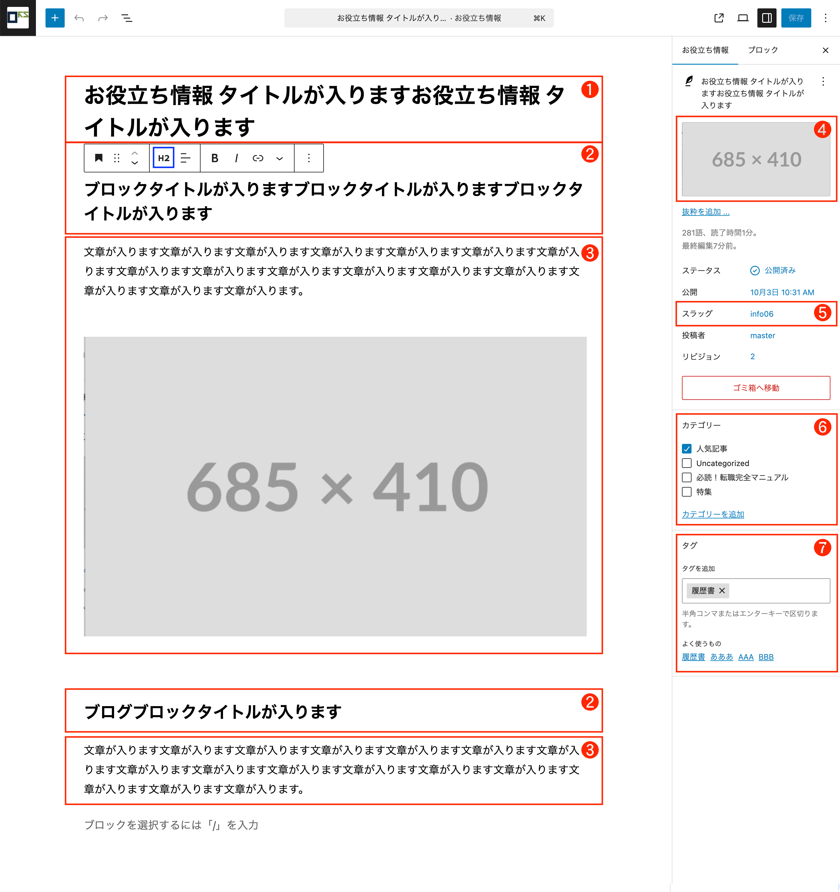
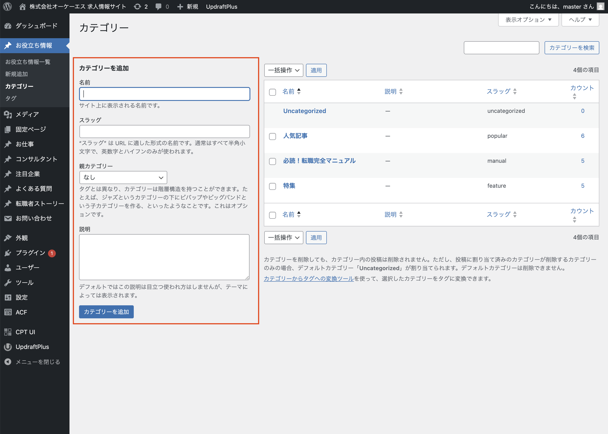

編集メニュー
お役立ち情報詳細
1 サイドナビ「お役立ち情報」→「新規お役立ち情報を追加」をクリック

左側のメニューから「お役立ち情報」をクリックします。
ページ上部「お役立ち情報を追加」をクリックしてください。
※権限がない場合は管理者にお問い合わせください。
2 お役立ち情報の内容を入力
❶：記事タイトル
お役立ち情報の記事タイトルを入力。
❷：段落タイトル
お役立ち情報の段落タイトルを入力。
タイトルレベルを「H2」に設定すると、自動で「記事まとめ(要約)」にリストされます。
❸：記事本文
お役立ち情報の記事本文を入力。
❹：アイキャッチ画像
お役立ち情報のアイキャッチ設定。詳細ページ・一覧ページに表示されます。
❺：スラッグについて
お役立ち情報の「スラッグ」は、Wordpressの「投稿」を利用しています。
スラッグが自動で設定されるため設定変更できません。
❻：カテゴリー
お役立ち情報のカテゴリー設定
必読！転職完全マニュアル： サイドメニュー「必読！転職完全マニュアル」に表示されます。
人気記事： サイドメニュー「人気記事」に表示されます。
特集：
サイドメニュー「特集」に記事タイトルとアイキャッチが表示されます。
お役立ち情報上部の「カルーセル」にアイキャッチが表示されます。
お役立ち情報下部の「特集記事」に表示されます。

❼：タグ
お役立ち情報のタグ設定
3 カテゴリー・タグの追加
カテゴリー名・スラッグを入力
名前、スラッグを入力「カテゴリーを追加」をクリックします。
注意:
初期設定の以下のカテゴリーは削除しないでください。
・人気記事（popular）
・必読！転職完全マニュアル（manual）
・特集（feature）
誤って削除した場合は上記と同様の名前でカテゴリーを作成してください。
注意: スラッグは英語大文字は小文字に自動で変換されて表示されます。
注意:
スラッグは一意である必要があります。
すでにある文字列を入力した場合、xxxx-01のように連番が自動で追加されます。